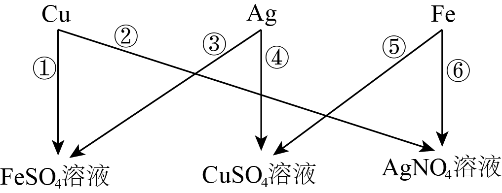
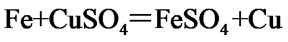
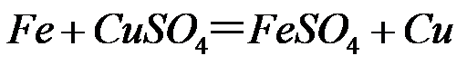

2023年北京中考化学 第37题 解析
37. 为验证铜、银、铁的金属活动性顺序，同学们设计了下图所示的6个实验。图中，“”表示将金属加入盐溶液。

（1）⑤中，反应的化学方程式为_____。
（2）设计②的目的是_____。
（3）仅由④和⑥不能得出铜、银、铁的金属活动性顺序，理由是_____。
【答案】（1）

（2）铜的活泼性比银强；
（3）④可证明铜比银活泼，⑥可证明铁比银活泼，但无法确定铁和铜的活泼性强弱（合理即可）
【解析】
【小问1详解】
⑤是铁加入硫酸铜溶液中反应生成硫酸亚铁和铜，化学方程式为：

，故填：；【小问2详解】
②是将铜加入硝酸银溶液中，可探究铜的活泼性比银强，故填：铜的活泼性比银强；
【小问3详解】
④是将银加入硫酸铜溶液中，无明显变化，可证明铜比银活泼，⑥是铁加入硝酸银溶液中，观察到铁丝表面有银白色物质析出，可证明铁比银活泼，但无法确定铁和铜的活泼性强弱，故填：④可证明铜比银活泼，⑥可证明铁比银活泼，但无法确定铁和铜的活泼性强弱。（合理即可）
【科学探究】